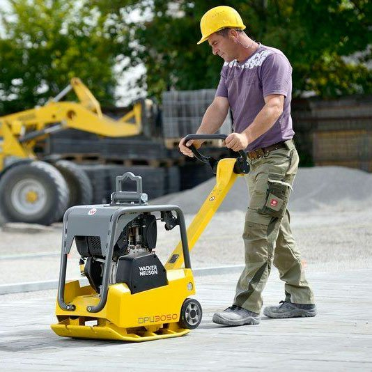

Вибротрамбовка при укладке тротуарной плитки
Для того, чтобы обеспечить высокое качество укладки и долговечность покрытия, необходимо применять качественную современную технику. Для уплотнения тротуарных покрытий толщиной до 6 см оптимальными будут виброплиты с рабочей массой 150 кг и центробежной силой 20-30 кН, для уплотнения тротуарных покрытий толщиной 8-10 см – виброплиты массой 170-200 кг с центробежной силой не менее 40 кН. При уплотнении покрытий с большой толщиной используются виброплиты массой 200-600 кг с центробежной силой примерно от 30 до 60 кН. Недобросовестное уплотнение ведет к осадке грунта и разрушению обрабатываемого слоя. В то время как большинство укладчиков пользуются виброплитами массой 70-90 кг с центробежной силой 0-20 кН, наша бригада одна из не многих в г. Харькове использует виброплиту Wacker DPS 3050 с центробежной силой в 30 кН и массой 180 кг. Пример работы вибротрамбовки на разных этапах укладки тротуарной плитки